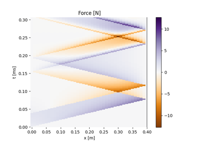

Examples of diagrams
Below are examples of usage of the elwaspatid module.
Interpretation of the space-time diagrams requires some knowledge on elastic wave propagation. Here are some useful references:
books:
Johnson, W. (1972). Impact Strength of Materials. Edward Arnold.
Graff, K. F. (1991). Wave Motion in Elastic Solids. Dover Publications.
articles:
Fischer, H. C. (1959). On longitudinal impact I. Fundamental cases of one-dimensional elastic impact, theories and experiments. Applied Scientific Research, Section A, 8(1), 105‑139. https://doi.org/10.1007/BF00411743
DeJuhasz, K. J. (1942). Graphical Analysis of Impact of Elastic Bars. Journal of Applied Mechanics, 9(3), A122‑A128. https://doi.org/10.1115/1.4009207


